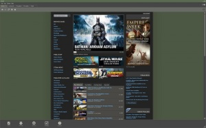
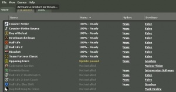

STEAM une longue hisoire...
Steam a été développé à l'origine pour n'être qu'une plate-forme de téléchargement de patchs. Valve, voyant la bande passante des particuliers gonfler d'année en année, voit l'opportunité de transformer Steam en une véritable plate-forme de distribution dématérialisée. Rapidement, Steam se transforme pour permettre de créer des parties en multijoueur avec Counter-Strike 1.6, puis, très vite (dès 2003), devient un logiciel obligatoire pour pouvoir jouer avec les jeux de Valve, à commencer par Counter-Strike et Half Life. Pour Valve, Steam est aussi une façon de distribuer leurs jeux à moindre coût et à grande échelle.
Aujourd'hui, Steam est une plate-forme très utilisée : plus de 21000 jeux sont ainsi disponibles en téléchargement et le nombre de comptes utilisateurs dépasse les 125 millions. De nombreux éditeurs sont disponibles sur Steam notamment Electronic Arts, Activision, THQ, Ubisoft et 2K Games. On y trouve par ailleurs des jeux qui n'auraient pas eu la possibilité de voir le jour dans un circuit de distribution classique, principalement les productions de développeurs indépendants n'ayant pas les moyens financiers de passer par les canaux de distribution traditionnels. A l'heure actuelle Steam reste la technologie avant-gardiste ayant fondamentalement modifié la vente de contenus informatisés par le biais d'une même plate-forme.
Steam fonctionne de manière similaire à un lecteur de flux RSS ; l'utilisateur sélectionne le jeu qu'il veut sur son ordinateur et Steam automatise le processus de téléchargement du contenu, la dernière version du jeu est immédiatement téléchargée, et au cas où il existe plusieurs versions (par exemple une édition 64-bit) la plus adaptée sera choisie automatiquement. A chaque démarrage de Steam, le programme se connecte à internet et vérifie que la dernière version du jeu est installée, assurant que le plus grand nombre possible d'utilisateurs aient un jeu à jour. Les mods des jeux apparaissent dans une liste dédiée, les plus populaires sont même disponibles gratuitement. Le kit de développement de Valve, le source SDK, est disponible dès le moment où l'on achète un jeu Valve tel que Half-Life 2, Team Fortress 2, Portal,... et permet la création de niveaux supplémentaires, de mods, de nouvelles textures etc.